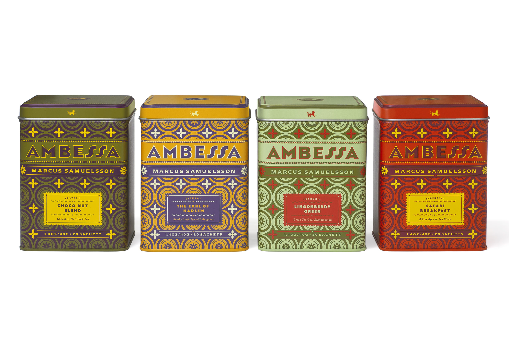
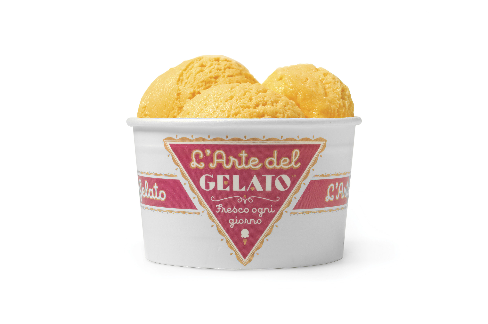
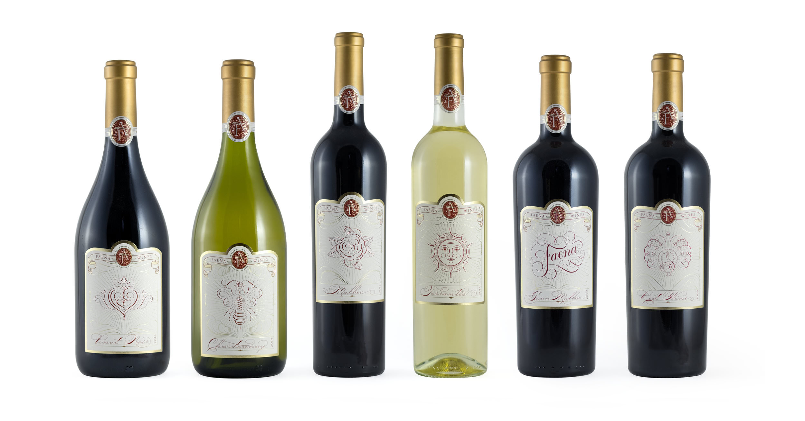

Titulo
Louise Fili es quizá una de las mujeres más importantes y trascendentes del diseño contemporáneo. Louise nació en 1951 en el condado de Orange en New Jersey e inició su carrera profesional trabajando con el mismísmimo Herb Lubalin; posteriormente fue directora de arte de Pantheon Books durante 11 años, periodo durante el cuál pasaron más de 2000 portadas de libros por sus manos.
En 1989 decidió independizarse y abrir su propio despacho de diseño, Louise Fili Ltd el cuál esta especializado en diseño de identidad y packaging para marcas relacionadas con alimentos y restaurantes.
 Todo su trabajo muestra altas dosis de elegancia y refinamiento; su estilo se caracteriza por nutrirse de varias fuentes de inspiración siendo las más importantes la gráfica italiana de los años 30s, el modernismo europeo y el art nouveau los cuales reinventa y mezcla de manera magistral con lettering, tipografía e ilustración en cada uno de sus proyectos.
